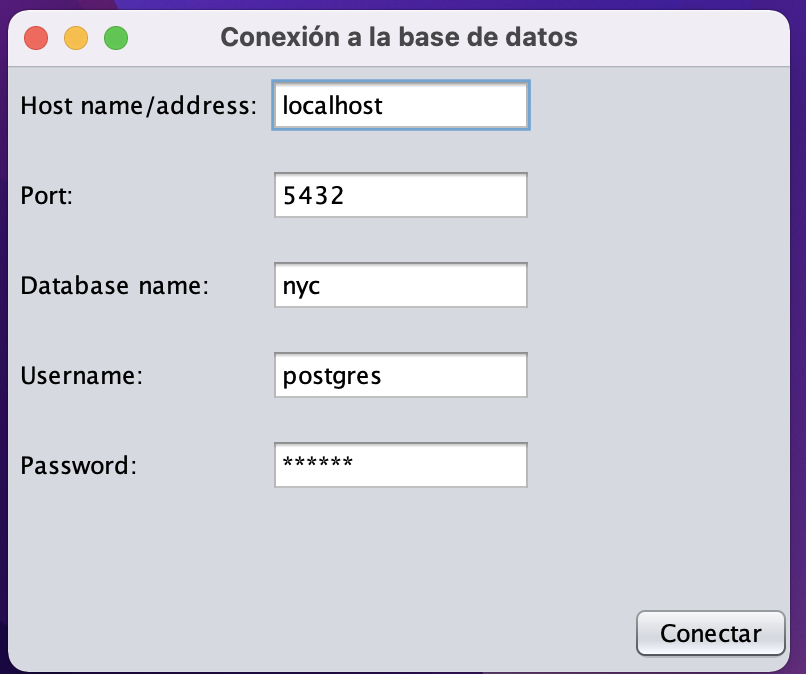
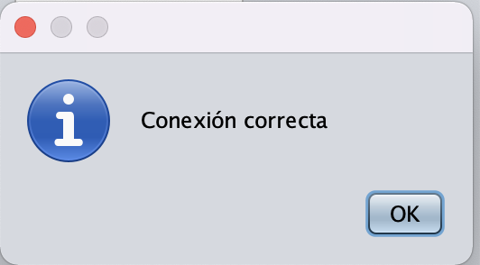
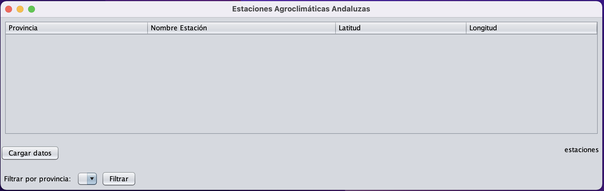
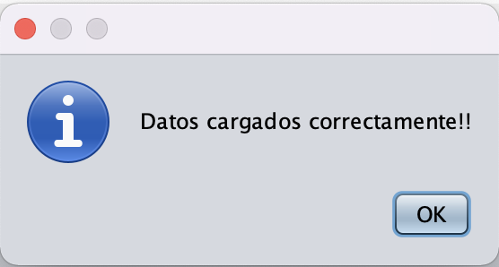
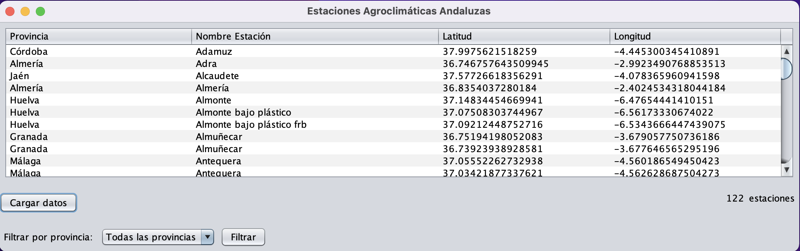
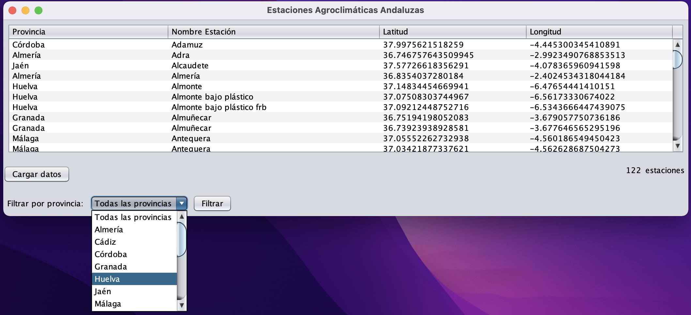
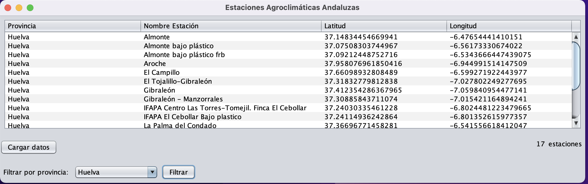

Para la realizacion de este proyecto, se ha optado por usar el conocido lenguaje de programación Java, el cuál nos apora entre otras cosas, la posibilidad de usar un driver de Postgres con el que la conexión y las consultas a las bases de datos se realizan de manera muy sencilla. Además nos aporta librerías de diseño de interfaz gráfica, lo cuál nos ayudara a la hora de representar los datos. En cuanto al desarrollo de la aplicación se ha usado el IDE Netbeans, concretamente la versión 12.4.
Se ha utilizado la propuesta de arquitectura de software Modelo-Vista-Controlador (MVC), la cual se basa en separar el código en función de las responsabilidades que tenga, por lo cual nuestro modelo tendrá las siguientes capas:
A la hora de la representación de los datos se ha querido hacer algo más "exclusivo" que lo que se proponía en el enunciado de la práctica, por lo que se ha optado por utilizar la librería Java Swing. Al estar integrada con el IDE Netbeans su utilización resulta bastante sencilla. Lo único que hay que tener en cuenta al utilizarla es que son contenedores (vistas) que almacenan componentes (etiquetas, campos de texto, etc.).
Al ejecutar la aplicación lo primero que nos aparece es una ventana (JFrame) en el podremos introducir los parámetros necesarios para realizar la conexión a la base de datos. Por defecto, aparecen los parámetros con lo que me conecto a la base de datos desde mi ordenador.

Si le damos al botón conectar, se intentará crear un objeto de conexión con el URI generado al haber rellenado esos campos y, si son correctos, nos aparecerá el siguiente mensaje.

Una vez que se ha realizado la conexión a la base de datos correctamente, se nos muestra la vista principal de nuestra aplicación.

Como se puede observar aparece la tabla vacía, esto se debe a que no se han cargado los datos.
Si se le dá al botón Cargar datos dentro de nuestra aplicación de Java se ejecutará el siguiente fragmento de código:
public ArrayList<Estacion> listaEstaciones() throws SQLException { ArrayList<Estacion> lEstaciones = new ArrayList<>(); try { //BLOQUE DE EXTRACCIÓN DE LOS DATOS A PARTIR DEL ENLACE DEL .TXT DE INTERNET URL url = new URL("http://www.uhu.es/jluis.dominguez/AGI/estaciones.txt"); InputStream inputStream = url.openStream(); Charset charset = Charset.forName("ISO-8859-1"); // Especifica la codificación actual del archivo InputStreamReader inputStreamReader = new InputStreamReader(inputStream, charset); BufferedReader in = new BufferedReader(inputStreamReader); in.readLine(); //Lee la primera fila (se la salta), la cual corresponde a los nombres de las columnas String line; //Comprueba si existe la tabla en la BD, en caso afirmativo la borra (junto a todos sus valores) Statement stmt = conexion.getConexion().createStatement(); String sql = "DO $$ BEGIN IF EXISTS (SELECT * FROM information_schema.tables WHERE table_name = 'estaciones') THEN DROP TABLE estaciones; END IF; END $$;"; stmt.execute(sql); sql = "CREATE TABLE estaciones (id SERIAL PRIMARY KEY,Provincia VARCHAR(255),Nombre VARCHAR(255),Latitud double precision,Longitud double precision);"; stmt.execute(sql); while ((line = in.readLine()) != null) { //Separa los valores de la línea por comas StringTokenizer st = new StringTokenizer(line, ","); Estacion estacion = new Estacion(); if (st.countTokens() == 4) { estacion.setProvincia(st.nextToken()); estacion.setNombre(st.nextToken()); //Conversión de UTM a coordenadas geográficas CRSFactory factory = new CRSFactory(); Projection utmProjection = factory.createFromName("EPSG:32630").getProjection(); ProjCoordinate utmCoordinate = new ProjCoordinate(Double.parseDouble(st.nextToken()), Double.parseDouble(st.nextToken())); ProjCoordinate latLonCoordinate = new ProjCoordinate(); utmProjection.inverseProject(utmCoordinate, latLonCoordinate); double lat = latLonCoordinate.y; double lon = latLonCoordinate.x; estacion.setLatitud(lat); estacion.setLongitud(lon); //Inserción de los valores en la BD sql = "INSERT INTO estaciones (Provincia, Nombre, Latitud, Longitud) VALUES ('" + estacion.getProvincia() + "', '" + estacion.getNombre() + "'," + estacion.getLatitud() + ", " + estacion.getLongitud() + ");"; stmt.execute(sql); } lEstaciones.add(estacion); } in.close(); } catch (IOException e) { e.printStackTrace(); } return lEstaciones; }
Como se puede observar el flujo de ejecución sería el siguiente:
.txt que se encuentra en la URL..txt en la base de datos.Si todo ha ido bien a la hora de la ejecución del método se nos mostrará el siguiente mensaje:

Y entonces, a partir la lista de estaciones devuelta en el método se rellena el JTable que al principio estaba vacío.
También, se rellenará de forma automática el JComboBox con todas las provincias disponibles para poder realizar un filtrado de la información. Éste se rellena haciendo uso del siguiente método en Java:
public ArrayList<String> listadoProvincias() throws SQLException { ArrayList<String> provincias = new ArrayList<String>(); Statement stmt = conexion.getConexion().createStatement(); String sql = "SELECT provincia FROM estaciones GROUP BY provincia ORDER BY provincia;"; ResultSet rs = stmt.executeQuery(sql); while (rs.next()) { provincias.add(rs.getString("provincia")); } return provincias; }

Una vez que se han cargado los datos en la base de datos y en el JTable junto a las provincias en el JComboBox, tenemos la opción disponible de hacer una consulta de las estaciones en función de las provincias en la que se encuentren.

Cuando tenemos la provincia seleccionada y pulsamos el botón filtrar, ahora nos aparecerá en la tabla aquellas estaciones cuya provincia sea la seleccionada.

La consulta se ha implementado en Java de la siguiente manera:
public ArrayList<Estacion> filtradoProvincia(String provincia) throws SQLException { ArrayList<Estacion> estaciones = new ArrayList<Estacion>(); Estacion estacion = null; Statement stmt = conexion.getConexion().createStatement(); String sql = "SELECT * FROM estaciones"; if (!provincia.equals("Todas las provincias")) { sql += " WHERE provincia='" + provincia + "';"; } ResultSet rs = stmt.executeQuery(sql); while (rs.next()) { estacion = new Estacion(); estacion.setProvincia(rs.getString("provincia")); estacion.setNombre(rs.getString("nombre")); estacion.setLatitud(rs.getDouble("latitud")); estacion.setLongitud(rs.getDouble("longitud")); estaciones.add(estacion); } return estaciones; }